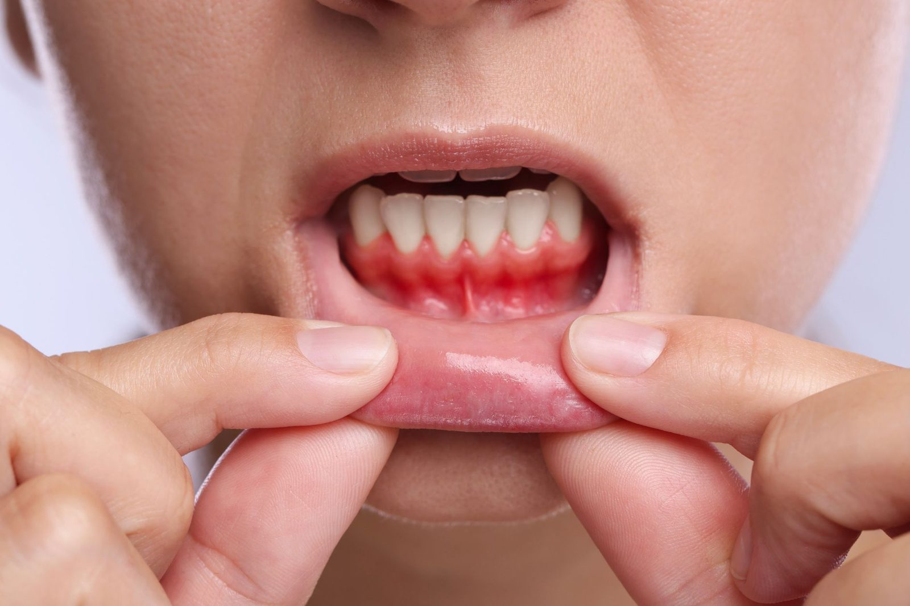

Gum Disease Treatment in Cronulla
Gum Disease Treatment in Cronulla
Gum disease is the leading cause of adult tooth loss, and most people who have it do not know.
Gum disease is the leading cause of tooth loss in adults, and most people who have it do not know.
That is not carelessness. It is the nature of the condition. Periodontitis is largely painless until it is advanced. It produces no obvious symptom that would prompt someone to book an appointment. Teeth that have been perfectly comfortable for decades can be sitting in progressively less bone without their owner having any sense of it.
Diagnosis at 13 Cronulla Street therefore depends on measurement rather than on how your mouth feels.

Opening 16 November 2026. Register your interest for priority booking.
Open until 7pm Mondays. Early appointments from 7am Fridays. Nervous patients are always welcome. We take time to explain your options clearly.
Gum Disease Treatment in Cronulla: in detail
What gum disease actually is
Teeth are not fixed rigidly into the jaw. Each one is held by a ligament attached to the surrounding bone, with the gum forming a seal around the top.
In periodontitis, bacteria below the gum line trigger a sustained inflammatory response. Over time, that response destroys the ligament fibres and the bone supporting the tooth. The gum detaches from the tooth surface, forming a deepening space called a pocket. Pockets are harder to clean than the open tooth surface, so bacteria accumulate further, and the process continues.
The critical point is that the bone lost does not come back. Treatment stops the process and stabilises what remains. It does not rebuild what has gone, except in a limited set of cases where regenerative techniques are appropriate.
This is why early diagnosis matters so much more here than in most areas of dentistry.
Gingivitis and periodontitis are not the same thing
Gingivitis is inflammation confined to the gum tissue. It is reversible and treated straightforwardly, and it has its own page.
Periodontitis is what some cases of gingivitis progress to. Once bone involvement begins, the condition changes character. It becomes something to be managed long term rather than cured.
Most people with gingivitis never progress. Susceptibility varies considerably between individuals, and genetics plays a real part, which is why two people with similar oral hygiene can have very different gum health.
What we look for
Pocket depth measurements.
A fine probe measures the space between gum and tooth at several points around each tooth. Up to about three millimetres is normal. Deeper readings indicate attachment loss. These numbers are recorded so we can compare them over time.
Bleeding on probing
, which indicates active inflammation.
X-rays
, which show the bone level directly and reveal loss that cannot be seen or felt.
Recession, mobility and furcation involvement
, meaning bone loss reaching the point where the roots of a multi-rooted tooth divide.
Contributing factors
, including smoking, diabetes, medications, family history and stress.
A full periodontal assessment takes time and produces a chart rather than an impression. That chart is what treatment planning is based on.
Signs worth acting on
- Gums that bleed when brushing or cleaning between teeth
- Gums that have receded, making teeth look longer
- Persistent bad breath or a bad taste
- Teeth that have become loose or have shifted position
- Gaps opening between teeth that were previously closed
- A change in how your teeth meet when you bite
- Pus around the gum line
- Tenderness or discomfort when chewing
Several of these appear only once the condition is established. Do not wait for them.
What treatment involves
Treatment is staged, and it is covered in detail on our periodontal treatment page. In outline:
Non-surgical treatment comes first, cleaning the root surfaces below the gum line thoroughly, usually across several appointments with local anaesthetic. This resolves or substantially improves the majority of cases.
Reassessment follows, measuring the same points again to see how the tissue has responded.
Where deep pockets persist, referral for surgical periodontal treatment may be recommended.
Maintenance then continues indefinitely, at intervals of three or four months rather than six, because periodontitis recurs when maintenance lapses.
Risk factors you can influence
Smoking
is the single largest modifiable risk factor. It worsens the disease, reduces how well treatment works, and masks the bleeding that would otherwise warn you. Patients who stop smoking respond considerably better to treatment.
Diabetes
works in both directions. Poorly controlled blood glucose worsens gum disease, and severe gum disease can make glucose harder to control.
Cleaning between the teeth
consistently, which is where the disease starts.
Attending maintenance appointments
, which is the factor most strongly associated with long term stability.
Getting assessed
If you have noticed bleeding, recession or movement, or if it has been years since anyone measured your gums, a periodontal assessment is worth booking.
We are at 13 Cronulla Street, Cronulla, and see patients from Woolooware, Burraneer, Greenhills Beach, Caringbah South, Taren Point, Kurnell, Bundeena and the wider Sutherland Shire.
Call (02) 8599 9815 or book online.
The rest of the gum health series
Doors open 16 November 2026. Register now and we will be in touch with your priority booking invitation.